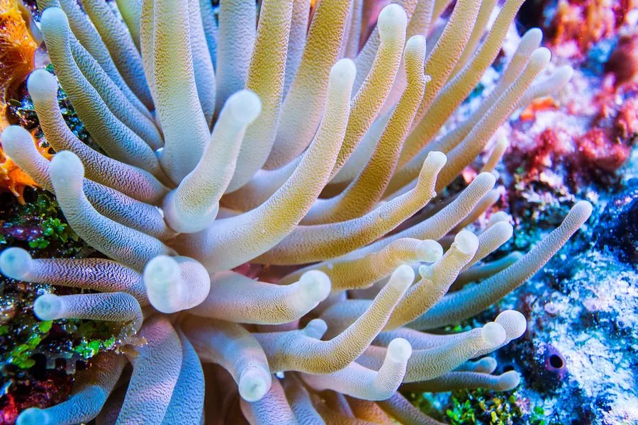

其他无脊椎动物 · 动物界
巨型海葵 Condylactis gigantea

体柱粗壮、触手细长且尖端带紫色的加勒比海海葵，与虾蟹共生，触手刺细胞可蜇伤皮肤，接触需注意。
- 分类
- 门刺胞动物门纲珊瑚虫纲目海葵目科海葵科属巨海葵属
- 栖息环境
- 热带珊瑚礁潮间带下区至水深数十米的礁石与海草床边缘
- 地理分布
- 加勒比海与热带西大西洋的珊瑚礁浅水区
- 保护级别
- 尚无保护级别；观赏水族贸易采集与礁区退化影响其种群
物种志
巨型海葵的体柱粗壮呈圆柱形，高可达十厘米，直径约五至八厘米，基盘宽大，能牢牢吸附在礁石上。它的触手细长，长度可达十五厘米，数目众多，从口盘边缘呈放射状伸出，触手呈淡绿、乳白或褐色，尖端常带紫色、粉色或淡蓝色，在水中飘动时像一丛摇曳的花。口盘中央是狭长的口，体柱表面有纵行的疣突。
它分布于加勒比海和热带西大西洋的珊瑚礁浅水区，栖息在潮间带下区至水深数十米的礁石、珊瑚碎块和海草床边缘，喜欢水流适中、光照柔和的位置。它是肉食性动物，用触手捕捉小鱼、虾类和小型甲壳类，靠刺细胞麻痹猎物后送入口中；同时它与清洁虾、小蟹和某些鱼类共生，为它们提供庇护。它雌雄异体，繁殖期在春夏，可进行有性生殖和纵向分裂。它的触手刺细胞能蜇伤人的皮肤，引起红肿和刺痛，敏感者反应更明显，徒手搬动或潜水触碰时应戴手套，被蜇后用海水冲洗并就医。
形态与习性
- 体柱粗壮圆柱形，高约十厘米
- 触手细长可达十五厘米，尖端带紫或粉色
- 共生与清洁虾、小蟹和某些鱼类共生
- 栖息水层潮间带下区至水深数十米的礁区
- 食性用刺细胞麻痹小鱼、虾类后送入口中
- 蜇伤触手可蜇伤皮肤，接触时需戴手套
趣味知识
- 它触手尖上那点紫色，是加勒比海潜水员最容易认出的标志。
- 清洁虾就住在它的触手间，天敌不敢靠近这个带刺的院子。
- 它的刺细胞对人只是红肿刺痛，对小鱼却是致命的一击。